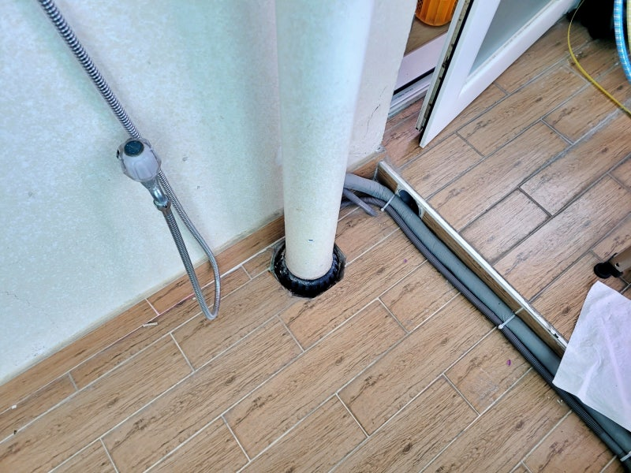
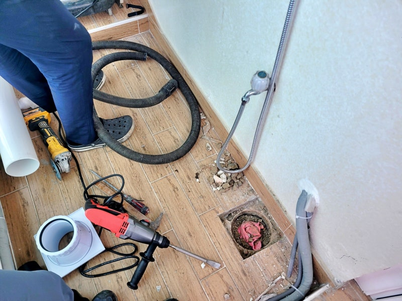
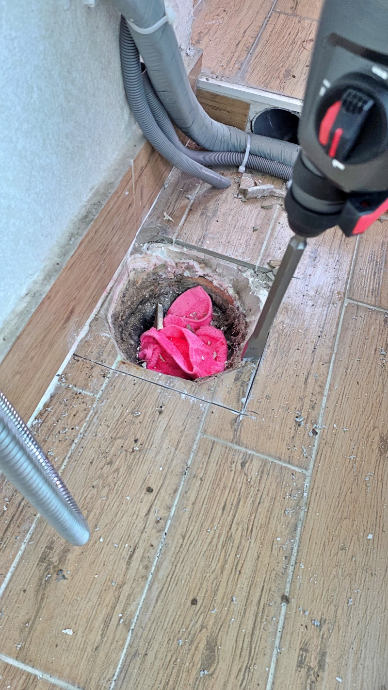
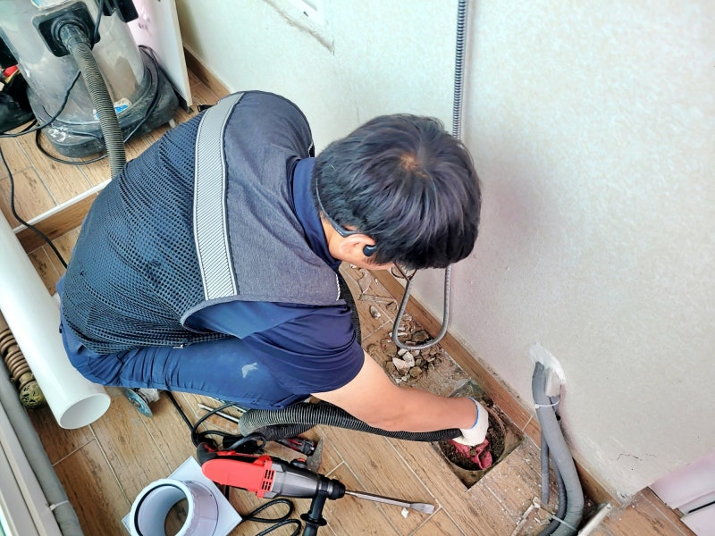
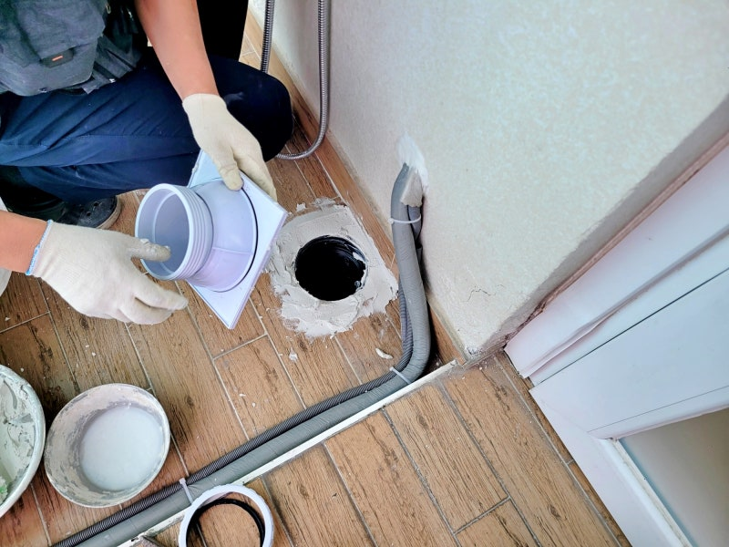
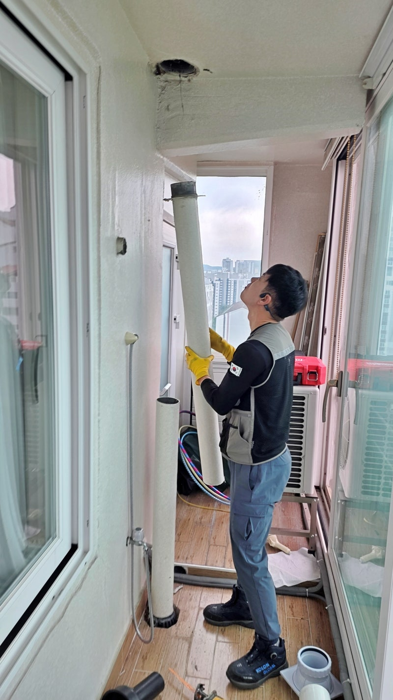
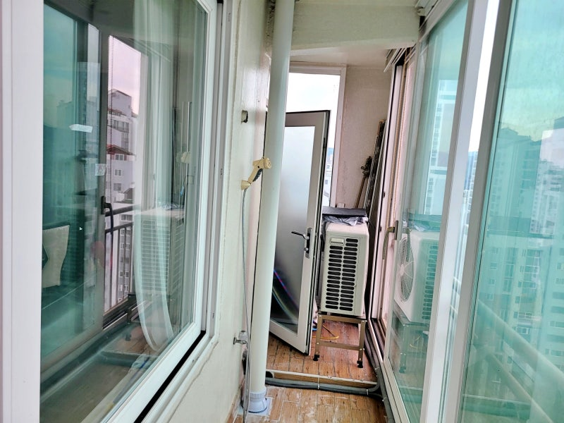

🏠 영통구 이의동 베란다누수 우수관교체 방수공사
비만 오면 아래층으로 물이 새는 누수 문제, 근본 원인 해결 사례

🔍 문제 상황
안녕하세요. 수원시 영통구 이의동 베란다누수, 우수관교체 방수공사 전문업체 하수구수사대 인사드립니다.
얼마 전 수원 영통구 이의동에 있는 아파트에서 연락을 받고 다녀왔습니다.
비만 오면 아래층 천장으로 물이 샌다는 다급한 호출이었는데, 막상 가보니 베란다 우수관 주변 상태가 말이 아니더군요.
💡 전문가 조언: 평소에는 괜찮다가 비만 오면 문제가 생기는 우수관누수 현장은 배관 주변의 틈새가 주범인 경우가 많습니다.
🔎 누수 원인 분석

영통구 이의동 베란다누수 현장에 도착해서 꼼꼼히 살펴보니 기존 우수관 주변의 마감은 이미 수명을 다한 상태였습니다.
주요 발견 사항
- 바닥과 배관이 맞닿은 경계면의 실리콘은 다 들뜸
- 방수층까지 손상되어 있는 상태
- 미세한 틈만 생겨도 아래층으로 물이 스며들기 쉬운 구조
사실 우수관 주변은 빗물이 끊임없이 지나가는 길목이라 아주 미세한 틈만 생겨도 아래층으로 물이 스며들기 딱 좋은 구조입니다.
저희 하수구수사대는 겉만 대충 때우는 방식은 절대 권하지 않습니다.
🔧 작업 과정 (4단계)
1단계: 기존 구조 철거

기존 우수관 주변 바닥을 조심스럽게 철거하는 작업부터 시작했습니다. 아니나 다를까, 속을 들여다보니 방수 마감이 엉망이었고 바닥 안쪽으로 습기가 가득 머물러 있더군요.
영통구 이의동 베란다누수 현장과 같은 상태에서는 단순한 실리콘 보수만으로는 해결이 안 됩니다.
2단계: 바탕 처리
 배관 주변 바닥 면을 평평하게 다듬는 과정
배관 주변 바닥 면을 평평하게 다듬는 과정배관 주변을 깔끔하게 정리한 뒤에는 새로운 우수관이 완벽하게 자리 잡을 수 있도록 바닥 면을 평평하게 다듬었습니다.
배관의 높이나 수직이 조금이라도 어긋나면 나중에 마감이 흔들릴 수 있어서 이 과정만큼은 정말 신경 써서 진행했습니다.
3단계: 우수관 교체

새로운 우수관 설치 — 틈 없이 밀봉 작업특히 배관이 통과하는 자리에 틈이 남지 않도록 빈틈없이 메워주는 것이 이번 수원 우수관누수를 잡는 핵심입니다.
우수관 주변에 방수재가 제대로 착 달라붙을 수 있도록 바탕 처리를 확실하게 하고, 새로운 배관을 세워 위치를 잡았습니다.
4단계: 방수 작업

많은 분이 베란다누수 문제를 겪으면서 배관만 갈면 끝나는 줄 아시는데, 사실 영통구 방수공사는 배관 설치보다 그 주변을 어떻게 마감하느냐가 훨씬 중요합니다.
물이 가장 많이 모이는 하단부와 바닥이 만나는 자리에 방수층을 충분하고 두껍게 형성해줘야 비가 아무리 많이 와도 안심할 수 있는 것이죠.
✅ 작업 완료 및 테스트

방수 작업을 마치고 나서 다시 한번 우수관 상부와 하부 연결 부위, 그리고 전체적인 바닥 마감 상태를 체크했습니다.
비 올 때마다 마음 졸이셨을 고객님께서도 이제는 안심이 된다며 만족해하시더군요.
📸 추가 현장 사진


💧 배수 테스트
이번 현장은 우수관교체와 방수공사를 동시에 진행하여 아파트우수관교체의 정석을 보여준 사례였습니다.
💡 핵심 정리
- ❌ 단순 실리콘 보수만으로는 해결 불가 — 구조적 손상 시 우수관교체 + 방수공사 병행 필수
- 🔑 미세한 틈만으로도 누수 발생 — 빗물이 지나가는 길목은 밀봉이 생명
- 🎯 정확한 원인 진단이 재발 방지의 핵심
- 📐 배관 설치보다 주변 마감이 훨씬 중요
❓ 자주 묻는 질문 (FAQ)
🚨 베란다 누수 문제로 고민이신가요?
비 올 때마다 마음 졸이지 마세요.
정확한 원인 진단과 확실한 시공으로 재발 없는 해결을 약속드립니다.
24시간 긴급 출동 | 서울 · 경기 · 인천 전지역 | 1년 내 재발 시 무상 A/S